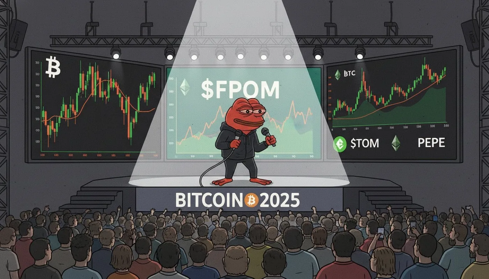
From joke energy to broadcast-ready identity
Live charts, stage lighting, and mascot energy all in one frame. It sets the tone for the rest of the page immediately.
FPOM on Massa
FPOM is a community-led meme project with a playable game loop, direct swap access, and active distribution across DeWeb, MNS, and X. The tone is still frog-powered. The surface is much more real.
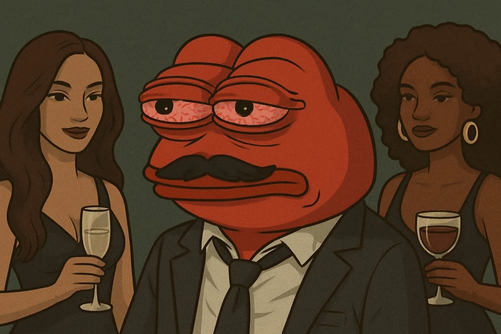
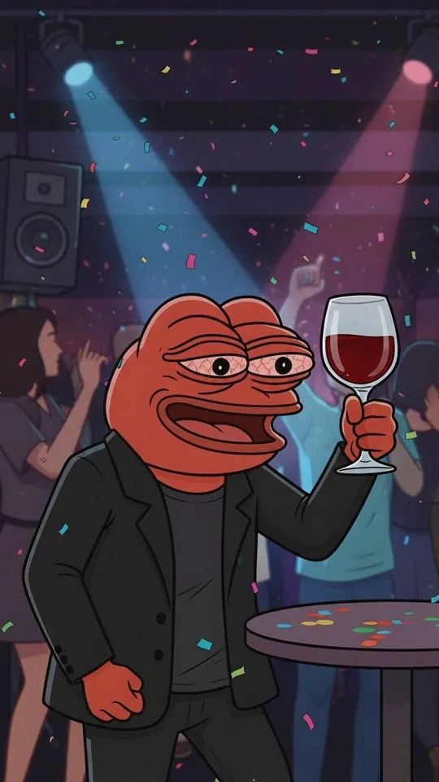
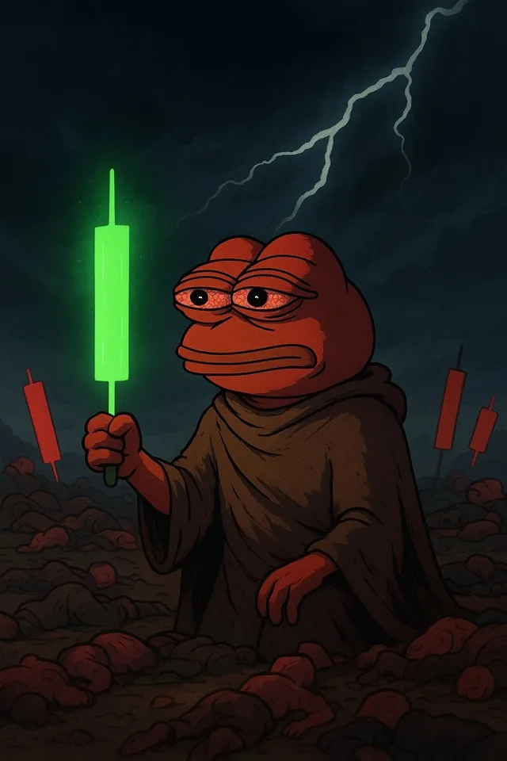
Buy desk
Official Dusa widget, pinned to MAS and FPOM. No tab-hopping. No route hunting. Just straight to the frog desk.
Network routes
DeWeb, MNS, and static mirrors all point back to the same frog zone. The section now reads more like a meme campaign map than a plain link block.
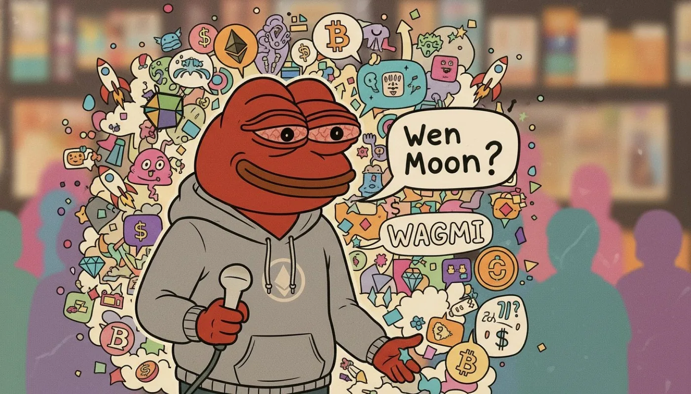
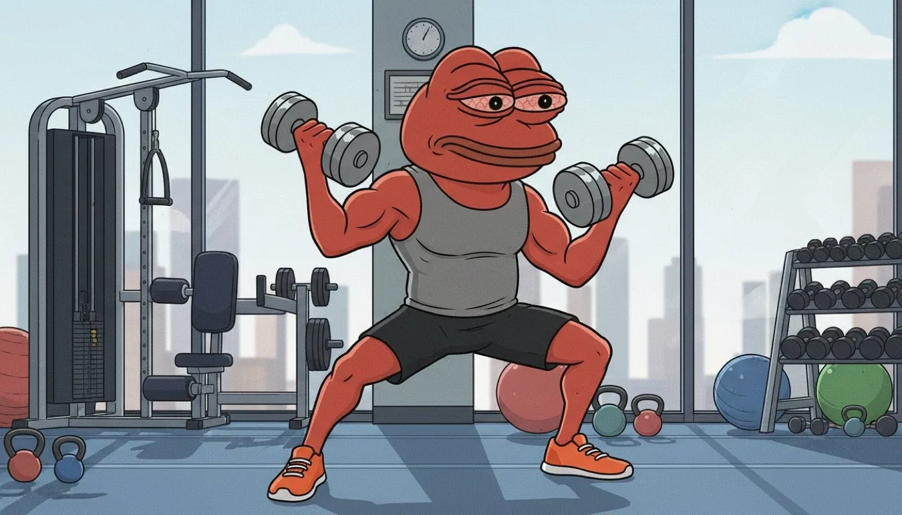
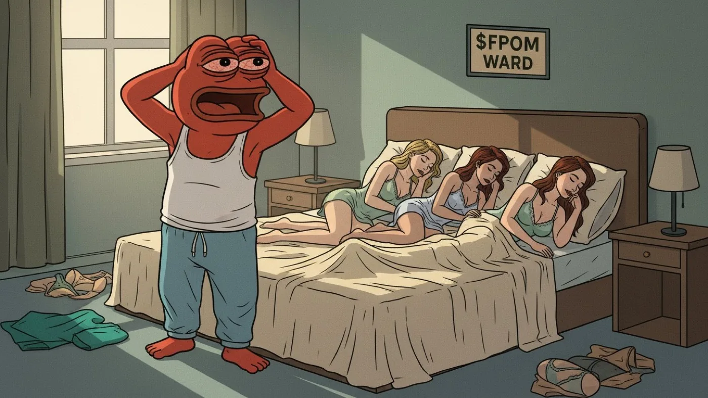
Community
More campaign art now lives on the page itself: bigger slider, more scenes, and a thumbnail strip so the section feels busy in the right way.

Live charts, stage lighting, and mascot energy all in one frame. It sets the tone for the rest of the page immediately.
Graffiti, stickers, and oversized text give the site a louder voice without turning it back into a random sticker bomb.
The community section now has enough image volume to feel like an ongoing visual campaign rather than a single gallery card.
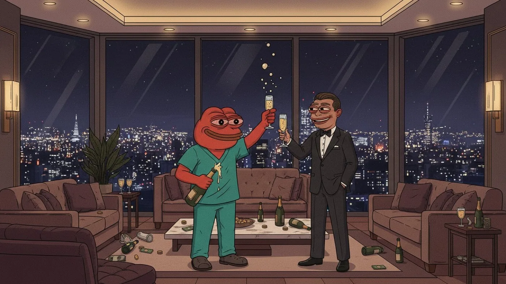
The layout keeps the meme angle, but the presentation feels more deliberate, more collectible, and closer to a campaign page than a throwaway token microsite.
Mixing spectacle with quieter scenes keeps the section from feeling repetitive and gives the brand a stronger sense of range.
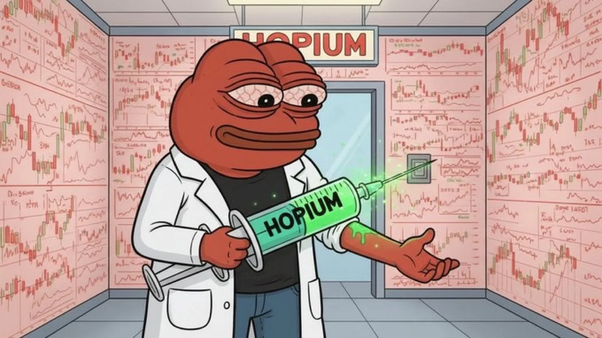
The visual language gets more fun once the site gives these frames room to work as atmosphere, not just as hidden media.
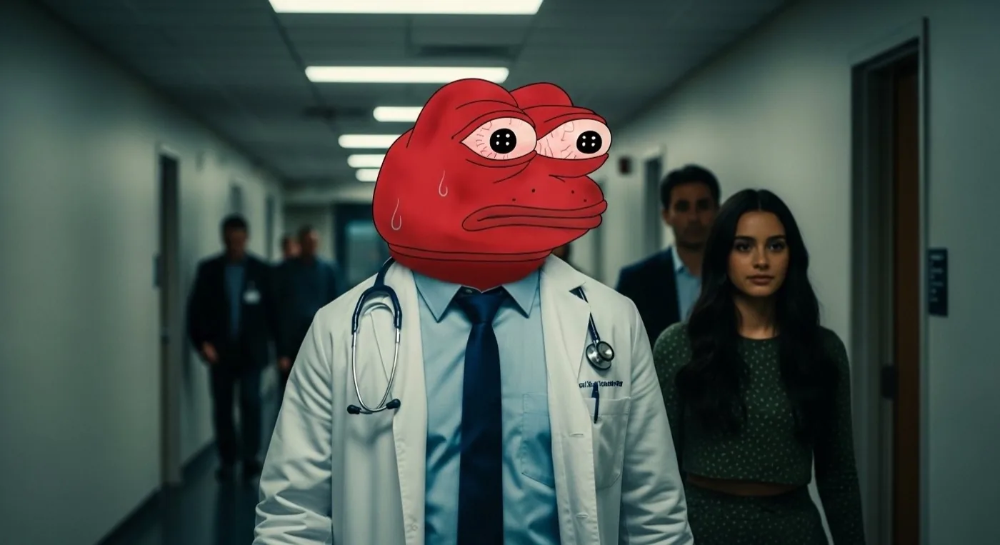
These extra frames make the section feel like a feed, not a placeholder. That better matches the project's social identity.
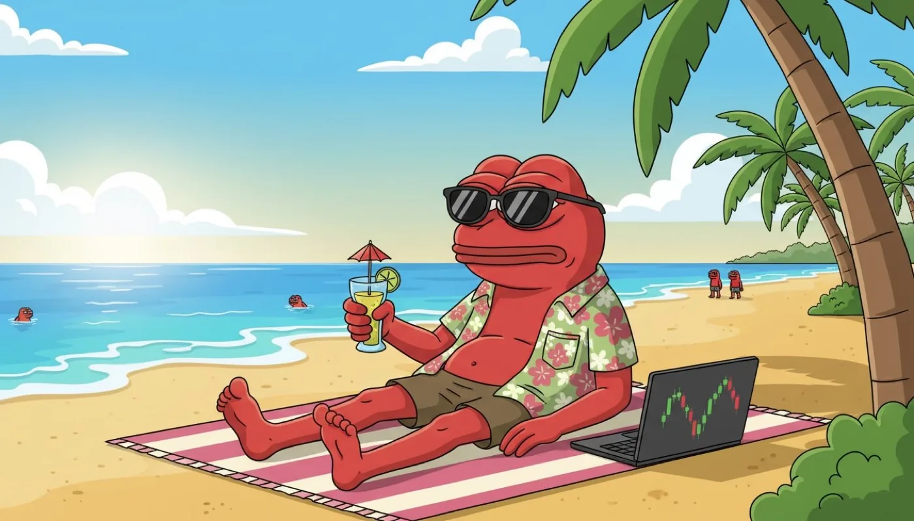
FPOM still keeps the unserious-in-the-right-way energy. The difference is that the site now uses it as part of a consistent art direction.
Token details
FPOM remains a meme token and a volatile asset. The page makes the route clear without pretending the risk is anything else.
FPOM contract
AS12GDtiLRQELN8e6cYsCiAGLqdogk59Z9HdhHRsMSueDA8qYyhib